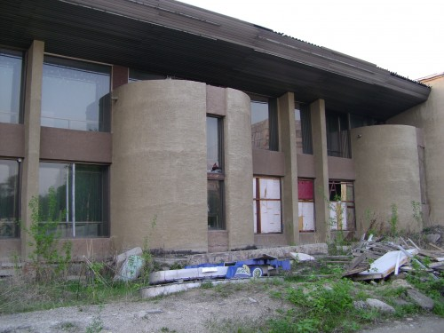
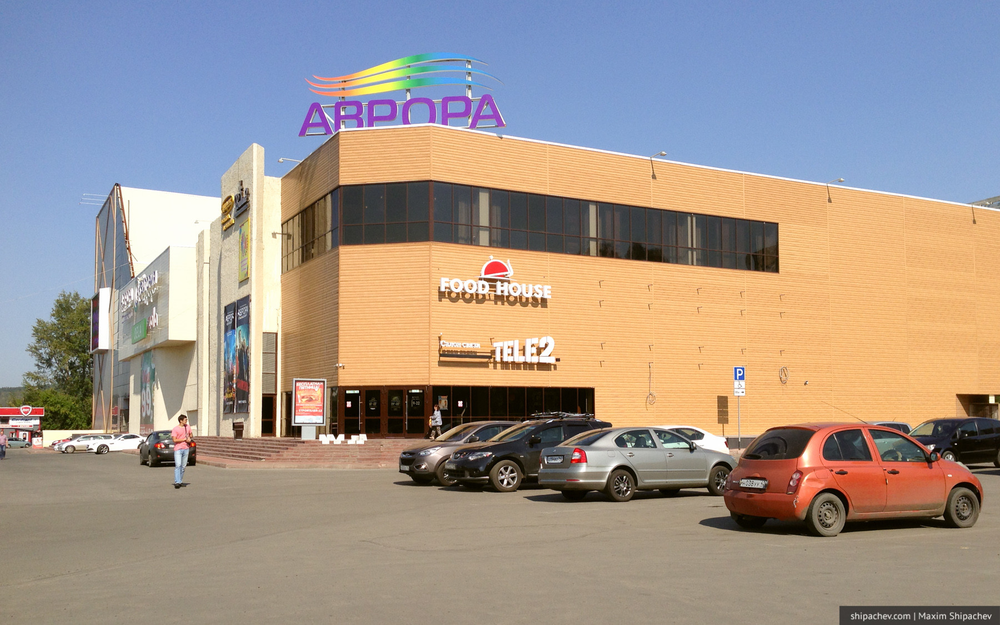
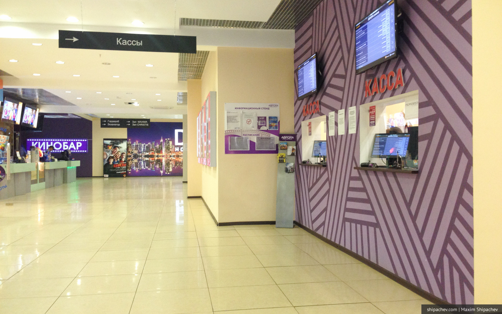
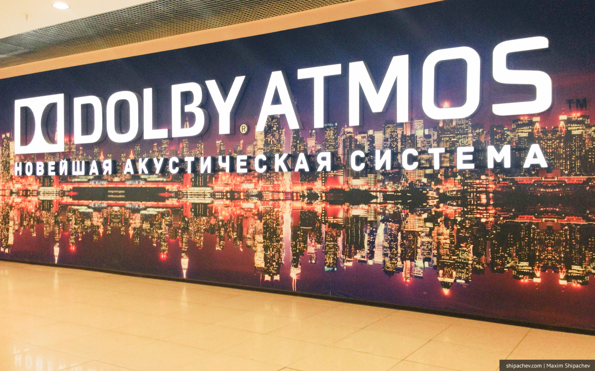
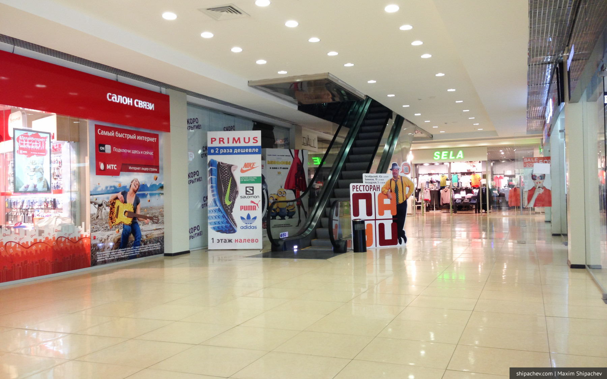
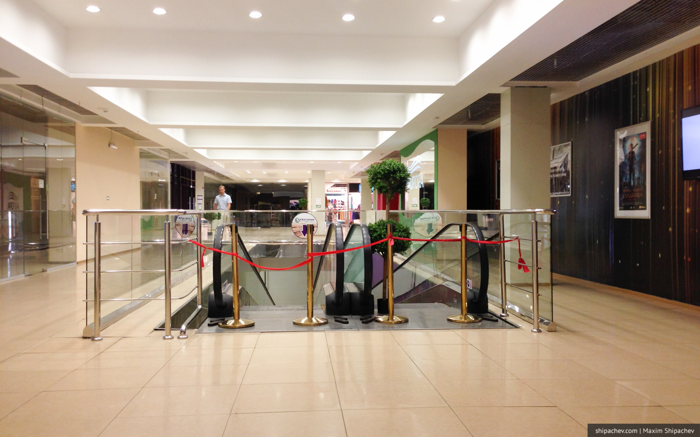
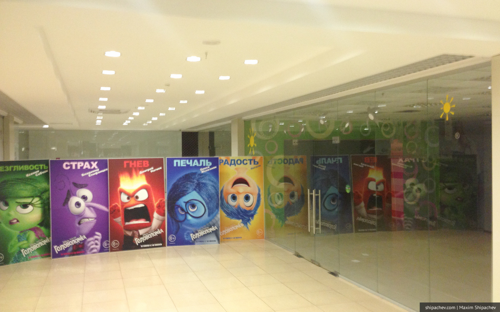
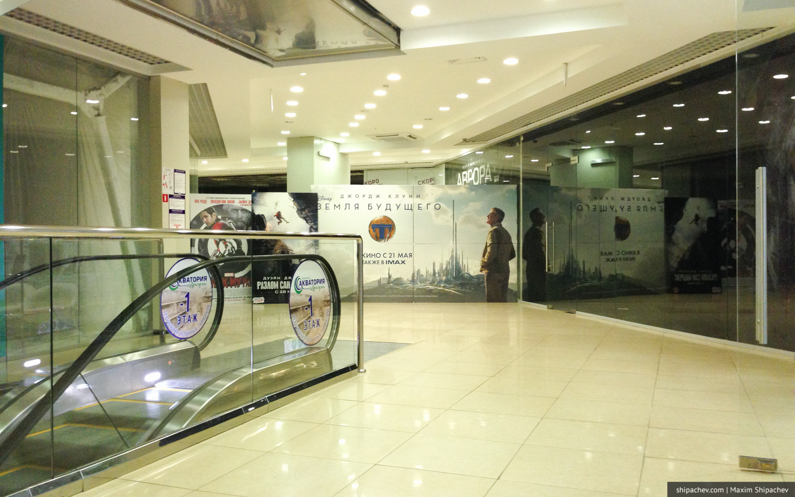

В Кемерове, как и в многих городах Сибири, да и вообще России, торговых центров в избытке. Если лет 30 назад мы любили что-то производить, то сегодня нас окружают сплошь маркетологи и продавцы.
Правда, в последние полгода продавцов немного поубавилось, вслед за покупателями.
Торгово-развлекательный центр «Аврора» разместился в здании бывшего одноименного кинотеатра. Кинотеатр «Аврора» был открыт относительно недавно, уже на закате социализма, 11 августа 1989 года. Функционировал около 15 лет, в дальнейшем здание было заброшено и постепенно разрушалось.
Лет 7 назад здание выглядело примерно так.


В 2012 году здание выкупила и начала реконструировать крупная торговая компания региона — «Аквамаркет». Планировалось, что это будет не просто очередной торговый центр, предприниматели хотели сохранить и бывший профиль здания, оборудовав в нём кинотеатр IMAX. О том, что аймакса в Кемерове всё-таки пока не будет кемеровчане не знали до последнего. Была даже история, когда жители города «выводили на чистую воду» бизнесменов, пока те упорно утверждали, что это настоящий Очень Большой Экран.


Тем не менее в 2014 году ТЦ «Аврора» был открыт и начал наполняться арендаторами.

На цокольном этаже разместился супермаркет «Акватория», на третьем — фудкорт и кинотеатр с двумя залами. Первый и второй этажи отдали на откуп сторонним арендаторам.
К несчастью для всех, засиять «Авроре» не было суждено, по крайней мере пока. Проблемы владельца здания наложились на рост цен и спад продаж в середине 2014 года. Супермаркет сначала опустел, а потом и вовсе был закрыт. Поток людей пошёл на спад, арендаторы стали покидать торговый центр.



Сегодня в «Авроре» функционирует фудкорт, кинотеатр, первый этаж и один бутик на втором, где разместилась фотостудия.
На фудкорте работает WiFi, но чтобы не делить скорость точки доступа с другими приезжающими на обед кемеровчанами, я пользуюсь Билайном. Скорость во время тестового замера — 28,5 мегабит в секунду.